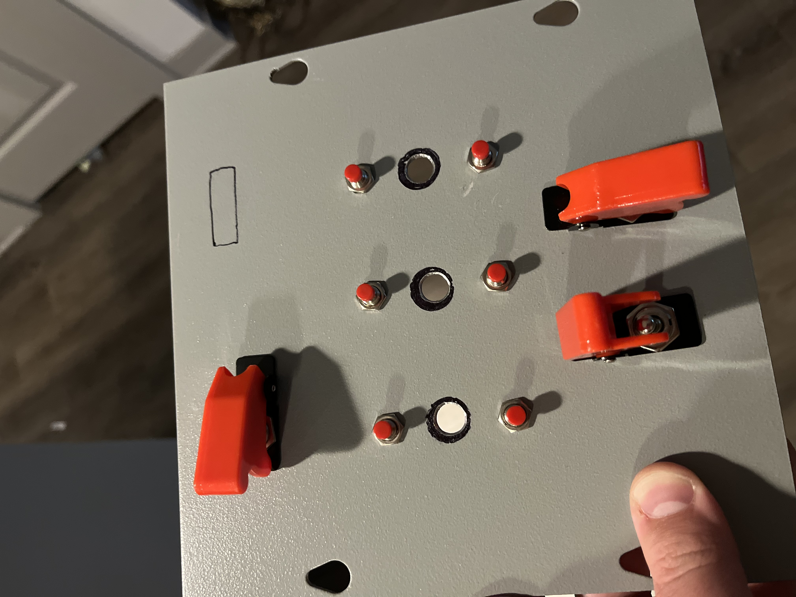
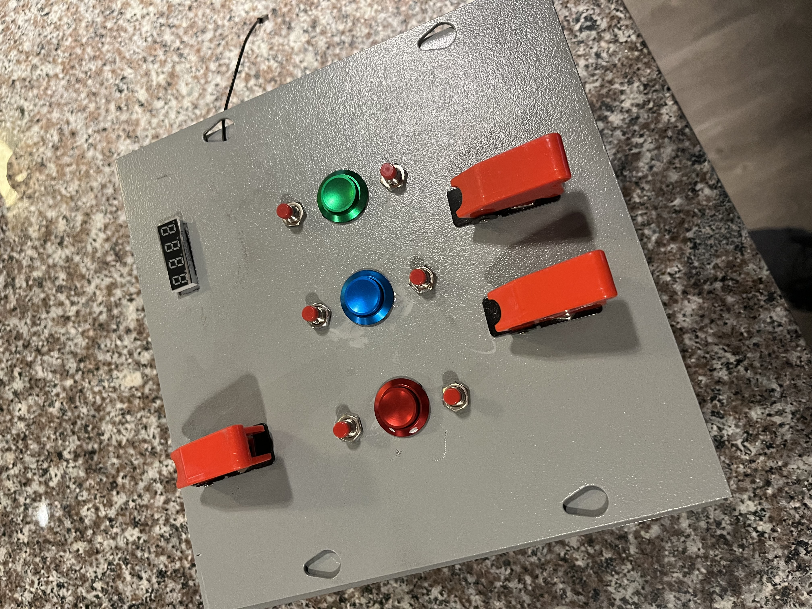

Tractor sprayers are commonly used to spray fertilizers and pesticides over long rows of plants. However, typical sprayer control systems on tractors are very basic. It is very common to see ball valves being turned on and off by an operator to control the spray. The manual ball valve control method is very inefficient and frequently leads to operator fatigue and possibly repetitive injury. To improve the usability of sprayers a control system that can be programmed would be a tremendous improvement. The image shown below is a automated sprayer controller design that I created.
The automated sprayer will need to be controlled by a micro controller. For this project, the Raspberry Pi Pico has been selected. The Pico needs to have a voltage source, so a 7.4 volt battery was selected. However, 7.4 volts is too high, so step down converters were used to bring the voltage down to 5V. It should be noted that the step down converters being used are noisy, so capacitors have been added to the output of the step down converters. After finishing the power supply for the system, a simple code (shared at the bottom of the website) was written that could run a 4 digit 7 segment display. The display utilized 330 Ohm resistors to connect to ground. Shown below is a video of the raspberry pi controlling the display that will soon be implemented into the control box. It should be noted that after turning on the pico, my initials show for a small period of time before showing setting numbers.
After getting the display and power supply functional, the next task was to create a housing for the setup. Shown below by the two images is the custom built face plate of the housing.


After making the face plate for the housing, the next task was to wire and assemble the electronic parts. The image shown below is the electronics and their wiring. Note how messy it looks; this is why wiring harnesses are a great idea.
After assembling the various circuits together and affixing the buttons to the panel, I created some labels to help the operator identify the purpose of each button. The labels are shown below in the following image.
The setup is now wired and the Pico has been programmed. To ensure everything has been done correctly, the setup buttons and display was tested. Shown below is a video of the testing.
With the display and buttons working, it is now time to wire the sensors and the solenoid valve. Shown below is a video of the sensor and solenoid valve being tested after wiring. It should be noted that a flyback diode is necessary since the solenoid acts as an inductive load and may lead to voltage spikes that can potential damage the PICO when used without the diode. (For those trying to copy the design, you have been warned by a professional board burner not to use the PICO with inductive loads without a flyback diode)
This project is in progress and will likely be finished over the next few weeks. Stay tuned for the implementation on a real-life tractor.